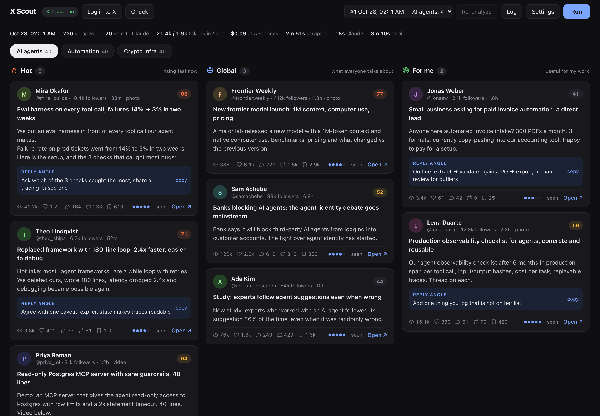
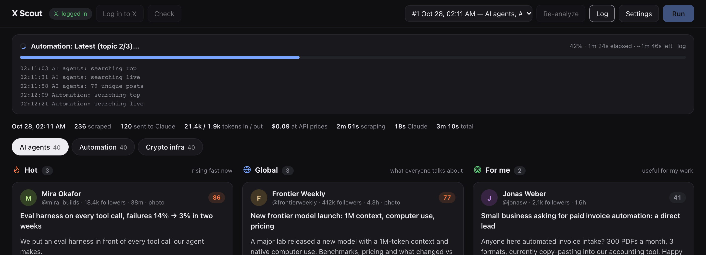
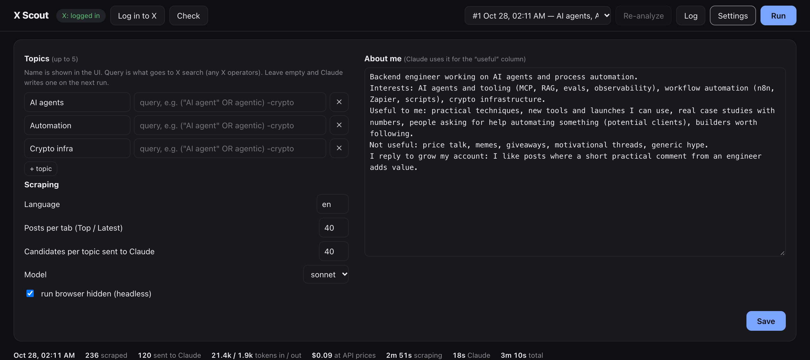

Pick up to 5 topics. X Scout searches X in a real browser, scores every post for early virality and asks Claude, in one cheap call, what is taking off, what matters today and what is useful to you.

3–6 posts each, with Claude's one-line take, a suggested reply angle and a depth rating. Mark posts as seen while you go.
Young posts that are taking off right now. Reply early and ride the reach.
The most important posts of the day: launches, news and big debates, so you stay in the loop.
Useful for your work, based on a short profile you write: tools, techniques, people asking for help.
No DOM scraping, no screenshots, no clicks. Most of the work is done locally for free; Claude only sees the shortlist.
Playwright drives your Google Chrome and reads X's own search JSON, Top and Latest, with randomized pauses.
Projected views, engagement per view, reach vs the author's usual level, acceleration between runs.
The best ~40 posts per topic go to claude -p as one compact line each.
Three columns per topic, a reply angle you can copy, a link to open the post on X.
A short custom system prompt, no tools, no settings, an empty working dir, and a line-based answer instead of a JSON schema (which costs a second model turn).
| Output format, 3 topics × 25 posts, Sonnet | Input | Output | Time |
|---|---|---|---|
--json-schema | 15.0k | 4.9k | 33 s |
| line format (used) | 6.0k | 1.6k | 15 s |


macOS or Linux with Google Chrome, uv and a logged-in Claude Code CLI.
git clone https://github.com/Sentimenta1ist/x-scout.git
cd x-scout
./runLog in to X once in the window that opens (a secondary account is a good idea), add your topics, press Run. No X account yet? Try the demo data:
X_SCOUT_DATA=./demo-data uv run python scripts/demo.py
X_SCOUT_DATA=./demo-data uv run x-scout